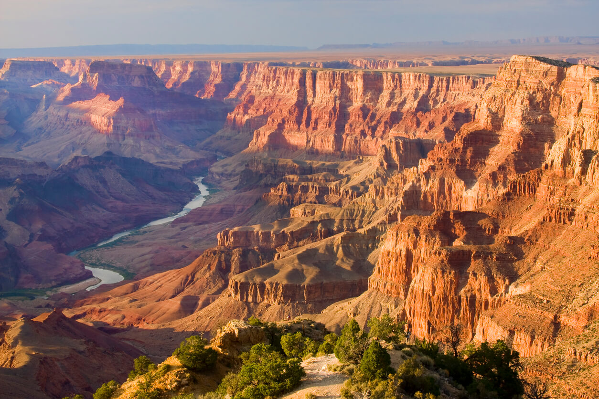
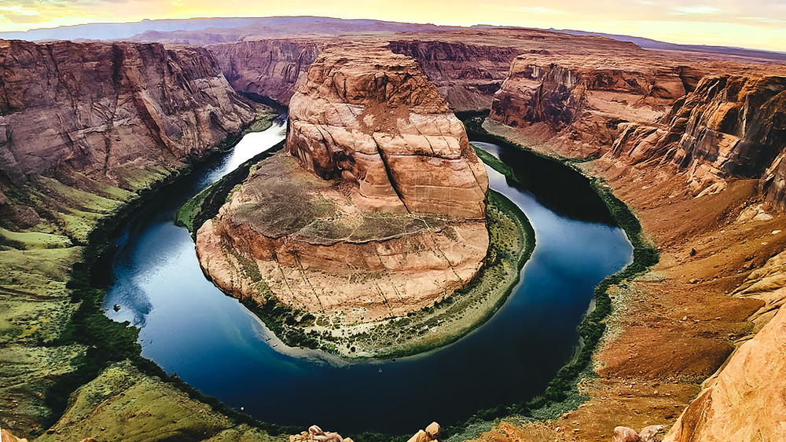

Wielki Kanion Kolorado to jedno z najpiękniejszych miejsc na ziemi i wizytówka USA. Pod względem powierzchni stanowi najrozleglejszy na świecie system kanionów. Wielki Kanion jest obowiązkowym punktem na trasie każdego odwiedzającego zachodnią część USA.Wycieczka do Wielkiego Kanionu jest niezapomnianym przeżyciem, niezależnie od tego czy spędza się dni wędrując po jego dnie, czy stojąc na krawędzi i wpatrując się w zadumie na rozpościerającą się przed nami gigantyczną otchłań. W najgłębszym miejscu Kanion osiąga 1857 metrów, a jego szerokość waha się od 800 metrów w najwęższym punkcie do 29 km w najszerszym. Całkowita długość kanionu szacowana jest na 446 km. Mimo tak znacznych liczb, Wielki Kanion nie jest najgłębszy. To zaszczytne miano należy się Kanionowi Colca w Peru. Według jednej z hipotez Kanion Kolorado zaczął tworzyć się około 17 milionów lat temu, a jego wschodnia część została uformowana około 5-6 milionów lat temu.
Miejsce to absolutnie przytłacza swoją wielkością. Nie bez kozery uznaje się je też za jedno z najpiękniejszych miejsc świata. Clarence Dutton, dziewiętnastowieczny geolog, który opublikował jedno z najwcześniejszych dzieł o geologii Wielkiego Kanionu, otaczał go tak wielką czcią, że niektóre formacje skalne nazwał imionami bogów i mędrców starożytnego świata: Salomon, Apollo, Wenus, Thor, Zaratustra, Horus, Budda, Wisznu, Kryszna, Śiwa czy Konfucjusz.

